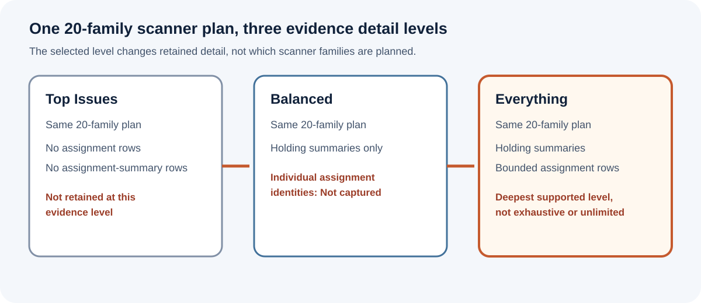

Complete
The full assignment population for that licence family was retained. Complete is not inferred merely because a cap was reached or because expected is unknown.
Security Observatory
A bounded public contract for scanner planning, evidence detail levels and licence-assignment retention.
Version 1.4 - current immutable edition
| Field | Value |
|---|---|
| Author | Luca Pacini |
| Publisher | Fortmilo |
| Publication date | 29 August 2026 |
| Status | Current. This versioned edition is immutable. The stable current alias resolves to identical bytes. |
| Governing terminology | Evidence Terminology Contract v1.1 |
| Document licence | Creative Commons Attribution 4.0 International, subject to third-party material and trademark boundaries. |
Nothing found and nothing assessed are not the same result. A retained cap is not an organisation total.
Security Observatory plans the same 20 scanner families at every evidence detail level. Top Issues, Balanced and Everything change the safe detail retained, displayed, compared and exported; they do not change which scanner families are planned. Everything is the only level that retains individual licence-assignment evidence, and that evidence is deliberately bounded.
This edition defines the three licence families, the per-family retention maximum, the inspection sentinel, capture statuses, count presentation and publication limits. It keeps source review, controlled tests, Salesforce runtime observations, release-candidate validation, managed-package installation proof and support as separate evidence classes. The document does not upgrade one class into another.
This paper is a public technical contract for evidence semantics and scanner orchestration. It describes current owner-approved behaviour and publication boundaries. It is not a security verdict for a Salesforce organisation, a promise that every source is available, or a statement that every environment and persona has been validated.
Evidence-class boundary. Review of implementation source can support a source-established statement. It is not Salesforce runtime observation, clean-install evidence, managed 2GP package-installation proof, Salesforce Security Review, AppExchange availability or environment support.
Each positive claim must remain at the class actually evidenced. A successful execution in one organisation proves only that bounded execution. It does not establish edition-wide compatibility or complete behaviour under every governor, permission, data-volume and failure condition.
Evidence Terminology Contract v1.1 keeps rendered evidence state, source availability, completeness, Coverage, evidence detail level and licence-assignment capture status separate. They answer different questions and must not be collapsed.
| Dimension | Purpose | Current boundary |
|---|---|---|
| Rendered evidence state | What the product can truthfully show for the available assessment evidence. | Contextual metric or finding label; None found; Unavailable; Not assessed; Not retained at this evidence level; Not captured; Not applicable. |
| Source availability | Whether each required source was accessible and usable. | An attempted required source that cannot be obtained or used is Unavailable. |
| Completeness | Whether otherwise usable evidence covers the intended scope. | Partial is a general qualifier, not a rendered state and not a licence-assignment capture status. |
| Coverage | How far available evidence can assess a mapped question. | Automated; Partial Evidence; Manual Required; Not Covered; Extended Check. Partial Evidence is Coverage, never an outcome. |
| Evidence detail level | How much safe detail is retained and can be used downstream. | Top Issues; Balanced; Everything. |
| Licence-assignment capture status | Whether the assignment population for one licence family was retained. | Complete; Incomplete; Unavailable. Incomplete is not a rendered evidence state. |
A successful assessed zero may render as None found. An attempted but unusable source is Unavailable. Work not performed or outside the assessed scope is Not assessed. Intentional omission at a selected level is Not retained at this evidence level or Not captured, according to the contract.
The same 20-family scanner plan runs at Top Issues, Balanced and Everything. The selected evidence detail level changes what safe detail is retained, displayed, compared and exported. It does not change which scanner families are planned.

Figure 1. The evidence detail level is a retention and presentation choice, not a scanner-family selection mechanism.
| Level | Scanner plan | Holding summaries | Individual assignments |
|---|---|---|---|
| Top Issues | Same 20 families are planned. | No assignment-summary rows are retained. | No assignment rows are retained. The detail is Not retained at this evidence level. |
| Balanced | Same 20 families are planned. | Holding summaries are retained. | Individual assignment identities are Not captured. |
| Everything | Same 20 families are planned. | Holding summaries are retained. | Bounded individual assignment capture is attempted for the three defined licence families. |
Everything means the deepest supported evidence detail level. It does not mean exhaustive, unlimited or a forensic export of the organisation.
Individual assignment retention at Everything applies to exactly three families:
Each family retains at most 1,000 assignment rows. The theoretical maximum across all three families is therefore 3,000 retained assignment rows per scan. This is a ceiling, not a target and not an organisation limit.
Inspection sentinel versus retention maximum. The capture path may inspect one additional candidate row per family, up to 1,001, to establish that more assignments exist than can be retained. That additional row is a sentinel. It is not retained assignment evidence. The retained-row maximum remains 1,000 per family, never 1,001.
Safe capture can be lower than 1,000 because the scan must preserve Salesforce transaction and DML headroom for status, evidence and orchestration records. A family may therefore retain fewer rows, including zero, even when assignments exist. The cap limits retained evidence only; it does not limit the number of Salesforce users, licences or assignments in the organisation.
Licence-capacity totals and holding summaries are separate from individual assignment evidence. Neither a holding summary nor a capped assignment set can be relabelled as the complete organisation population.
The full assignment population for that licence family was retained. Complete is not inferred merely because a cap was reached or because expected is unknown.
The full population could not be retained safely. Captured may be below expected or zero. Sentinel detection, the retention cap and transaction or DML headroom can establish this status.
Assignment capture was attempted, but required assignment evidence could not be obtained or used. Unavailable remains distinct from Incomplete.
When the expected population is known, show captured versus expected. When expected is unknown, leave it unknown. Do not substitute captured for expected, and do not infer expected as zero.
| Captured | Expected | Status | Permitted interpretation |
|---|---|---|---|
| 742 | 742 | Complete | All 742 expected assignments for this family were retained within the bounded capture evidence. |
| 1,000 | 1,462 | Incomplete | 1,000 of 1,462 were retained. The retained set is not the organisation total. |
| 0 | 53 | Incomplete | No rows could be retained safely. This does not mean there are no assignments. |
| 380 | Unknown | Incomplete unless full retention is otherwise established | Expected remains unknown. The display must not invent 380 of 380 or an organisation total. |
| Not available | Known or unknown | Unavailable | The required assignment evidence could not be obtained or used; no count conclusion is available. |
Zero captured is never enough to claim zero assignments. Where the full population could not be retained safely, zero captured remains Incomplete, not Complete and not None found.
The 20-family plan is executed through bounded asynchronous work so unrelated evidence does not have to share one transaction and failure boundary. The exact number of asynchronous segments is an implementation detail and is not a universal product contract.
The assignment-capture status is evaluated per licence family. One family can be Complete while another is Incomplete or Unavailable. The theoretical 3,000 maximum is therefore not a single all-or-nothing capture status.
Terminology Contract v1.1 defines a narrow boundary: the selected evidence detail level affects what retained detail can be displayed, compared and exported. Historical retained evidence is not rewritten when terminology changes. This publication does not assert that current runtime scans are terminology-version stamped or automatically comparison-gated.
A comparison cannot restore identities or rows that were not retained. A capped or incomplete assignment set must remain capped or incomplete in comparison. This edition makes no universal cross-environment, exact-candidate or every-version comparison claim.
Server-side collection and retention occur in the subscriber Salesforce organisation. The authenticated-browser LWC prepares the allow-listed CSV in memory. User-initiated download creates a local file outside Salesforce, after which the customer controls storage, sharing and onward handling. No persisted Salesforce CSV artefact is asserted.
An export is bounded by the evidence actually retained at the selected level. Exporting 1,000 capped rows does not transform them into the organisation total. Exact retained-data and export shape, including the raw-IP omission or redaction boundary, remains subject to validation for the reviewed path and environment. No universal formula-injection-safe or exhaustive-export claim is made here.
The public product status is sandbox-first and not yet available for public installation. The current reference architecture is a publication view, not managed-package evidence.
These boundaries are part of the claim, not optional caveats. A later validation record may raise a claim only for the stated candidate, organisation, persona and prerequisites that were actually exercised.
The reliable result is not the largest possible evidence set. It is a bounded result whose missing evidence remains visible. Security Observatory plans the same 20 scanner families at all three evidence detail levels, retains individual licence assignments only at Everything, and refuses to turn a capped or headroom-limited capture into an organisation total.
The count contract is deliberately explicit: 1,001 may be inspected as a sentinel, at most 1,000 rows per family may be retained, at most 3,000 may be retained across the three families in theory, and the safe captured total can be lower. Complete, Incomplete and Unavailable preserve the difference.
v1.4, 29 August 2026 - current. Immutable versioned PDF plus a byte-identical stable current alias.
v1.3, 1 August 2026 - superseded. Restored byte-for-byte from Git history at its previously promised immutable path. Its text is historical and is not rewritten to current terminology.
Luca Pacini is the human author and Fortmilo is the publisher. Copyright 2026 Luca Pacini. Fortmilo-authored text and figures in this paper are licensed under Creative Commons Attribution 4.0 International. That licence does not relicense third-party trademarks or cited material.
Fortmilo is a Salesforce Partner. Partner status does not imply AppExchange listing, Salesforce Security Review, managed-package availability or endorsement. Security Observatory is independently developed and is not endorsed by Salesforce, Inc. Salesforce is a trademark of Salesforce, Inc.
{kind=link}